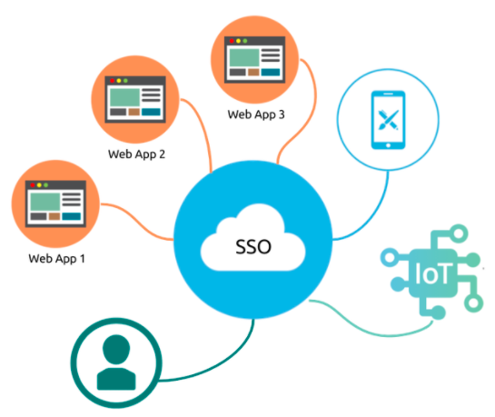

<div class="container-fluid">
  <div class="row">

    <nav class="col-md-2 d-md-block bg-light sidebar">
      <div class="sidebar-sticky">
        <ul class="nav flex-column">

          <li class="nav-item">
            <a class="nav-link active" routerLink="/dashboard" style="color: black;">
              <i class="fa fa-user"></i>  User Profile
            </a>
          </li>

          <!-- home page -->
          <li class="nav-item">
            <a class="nav-link" routerLink="/homepage">
              <i style="color: black;" class="fa fa-home"></i>
              <a style="color: black;"> Home</a>
            </a>
          </li>
          <!-- login -->
          <!-- <li class="nav-item">
            <a class="nav-link" routerLink="/sign-in">
              <i style="color: black;" class="fa fa-sign-in"></i>
              <a style="color: black;"> Login</a>
            </a>
          </li> -->

                <!-- Calling SignOut() Api from AuthService -->
                <li class="nav-item">
                  <a class="nav-link" (click)="authService.SignOut()" >
                    <i class="fa fa-sign-out"></i>
                    <a class="edit">  Log out</a>
                  </a>
                </li>
        </ul>
      </div>
    </nav>

<!-- <button class="btn" routerLink="/dashboard"><i class="fa fa-undo"></i> Back </button> -->


 <!-- Main content -->
 <main role="main" class="col-md-9 ml-sm-auto col-lg-10 px-4">
  <div class="inner-adjust">

    <div class="pt-3 pb-2 mb-3 border-bottom">
    <h1 style="text-align: center; color: red; " >Single Sign On - Đăng Nhập Một Lần</h1>
    </div>
    <!-- Show user data when logged in -->
    <div class="row"  >
      <div>
      
    </div>
    <div>
      <h2 class="content1">Single sign-on là gì?</h2>
      <p>Đăng nhập một lần (SSO) là dịch vụ xác thực phiên và người dùng cho phép người dùng cuối nhập một bộ thông tin đăng nhập (có thể gồm tên và mật khẩu) để có quyền truy cập vào nhiều ứng dụng.

      Trong dịch vụ web SSO cơ bản, module agent trên máy chủ ứng dụng sẽ truy xuất thông tin xác thực cho từng người dùng từ máy chủ SSO chuyên dụng,
       đồng thời xác thực chéo người dùng qua kho lưu trữ người dùng dưới dạng thư mục LDAP.
       Dịch vụ xác thực người dùng cuối cho tất cả các ứng dụng mà người dùng đã được cấp quyền và loại bỏ lời nhắc nhập mật khẩu tiếp theo cho các ứng dụng riêng lẻ trong cùng một phiên.
      </p>

      <h2>Single sign-on hoạt động như thế nào? </h2>
      <p>Single sign-on là một hệ thống quản lý danh tính liên kết (FIM) hay liên kết danh tính. OAuth, được phát âm là "oh-auth", là nền tảng framework cho phép các dịch vụ bên thứ ba sử dụng thông tin tài khoản của người dùng cuối, chẳng hạn như Facebook, mà không để lộ mật khẩu của người dùng.

      OAuth hoạt động như một trung gian đại diện cho người dùng cuối thông qua một mã token truy cập, mã này sẽ cho phép thông tin tài khoản cụ thể được chia sẻ. Khi người dùng cố gắng truy cập một ứng dụng từ nhà cung cấp dịch vụ, nhà cung cấp dịch vụ sẽ gửi yêu cầu đến bên nhận dạng thứ 3 để xác thực. Nhà cung cấp dịch vụ sau đó sẽ xác minh xác thực và cho phép người dùng đăng nhập.
    </p>
    
    <p>Một số dịch vụ SSO sử dụng các giao thức như Kerberos và ngôn ngữ SAML.
     SAML là một tiêu chuẩn XML cho phép trao đổi dữ liệu xác thực và nhận dạng người dùng trên các miền an toàn.
      Các dịch vụ SSO dựa trên SAML bao gồm giao tiếp giữa người dùng, nhà cung cấp nhận dạng và nhà cung cấp dịch vụ.
       Trong hệ thống dựa trên Kerberos, một khi thông tin đăng nhập của người dùng được cung cấp, xác thực ticket-granting ticket (TGT) sẽ được ban hành.
        TGT lấy ticket cho các ứng dụng khác mà người dùng muốn truy cập và không yêu cầu người dùng nhập lại thông tin đăng nhập.</p>

   <h2>Rủi ro bảo mật và SSO </h2>
    <p>Mặc dù đăng nhập một lần là một tính năng rất tiện lợi đối với người dùng, nhưng lại tiềm ẩn nhiều rủi ro cho bảo mật doanh nghiệp.
     Kẻ tấn công khi giành quyền kiểm soát thông tin đăng nhập SSO của người dùng sẽ có quyền truy cập vào mọi ứng dụng mà người dùng có thể truy cập, dãn đến gia tăng mức độ thiệt hại tiềm tàng.
      Để tránh các truy cập độc hại, điều cần thiết là toàn bộ các yếu tố khi triển khai SSO cần phải được kết hợp với quản trị danh tính.
       Các tổ chức cũng có thể sử dụng là xác thực hai yếu tố (2FA) hoặc xác thực đa yếu tố (MFA) kết hơp với SSO để cải thiện bảo mật.</p>

   <h2> SSO trên mạng xã hội</h2>
   <p> Google, LinkedIn, Twitter và Facebook đều cung cấp các dịch vụ SSO phổ biến cho phép người dùng cuối đăng nhập vào ứng dụng của bên thứ ba trực tiếp từ tài khoản social.
     Mặc dù phương thức này là một tiện ích cực kỳ tiện lợi, nó lại có thể gây ra rủi ro bảo mật nghiêm trọng.
      Nguyên nhân là vì cách xác thực này tạo ra single point of failure, rất có khả năng bị khai thác bới những kẻ tấn công.
       Nhiều chuyên gia bảo mật khuyên người dùng cuối không nên hoàn toàn dựa vào các dịch vụ SSO trên mạng xã hội,
        bởi vì một khi kẻ tấn công giành quyền kiểm soát thông tin SSO của người dùng,
         những người đó sẽ có thể truy cập tất cả các ứng dụng khác có cùng thông tin đăng nhập.</p>


        </div>
    </div>

  </div>
</main>
